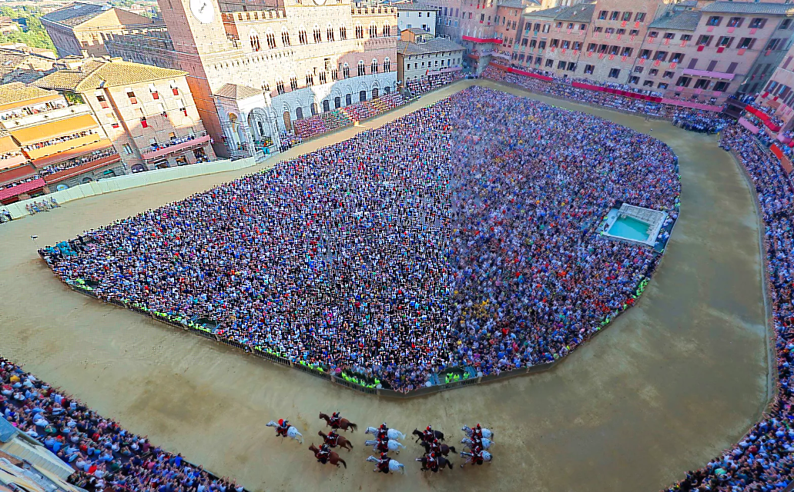
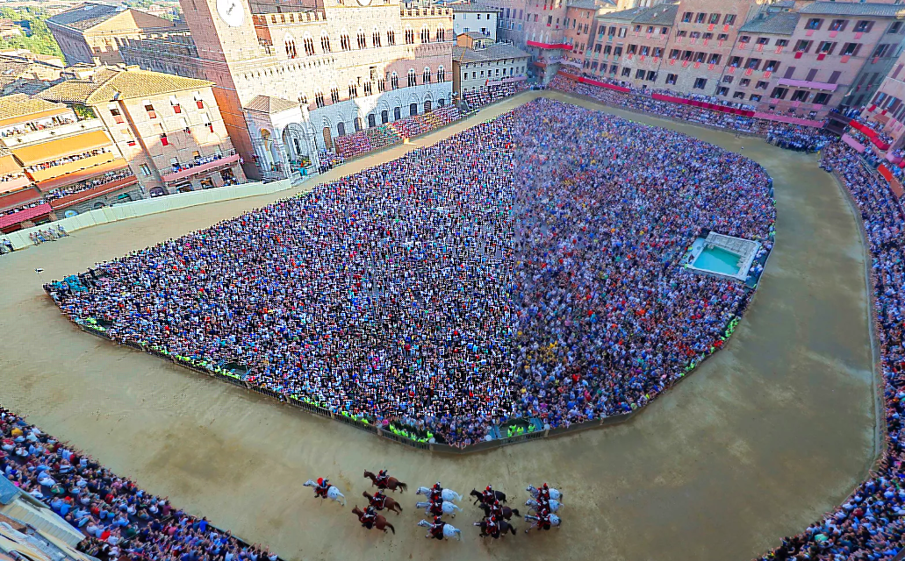

¿Qué es el Palio de Siena?
El Palio de Siena es una tradicional carrera de caballos que se celebra dos veces al año en la ciudad de Siena, Italia.
Esta festividad tiene sus raíces en la Edad Media y es conocida por su colorido desfile y la intensa competencia entre las
diferentes "contrade" (barrios) de la ciudad.
En ocasiones excepcionales, como fue la llegada del hombre a la luna, o aniversarios entendidos como relevantes y pertinentes,
como el centenario de la Unificación de Italia, la comunidad de Siena puede decidir efectuar un Palio extraordinario, a celebrar entre mayo y septiembre.
La carrera tiene lugar en la céntrica Piazza del Campo de Siena.
 

Historia del Palio de Siena
Según algunas fuentes, fue en recuerdo de la batalla de Montaperti que ponía fin al peligro florentino,
por lo que los sieneses decidieron iniciar el Palio, considerado hoy una de las fiestas históricas más importantes de Italia.
La carrera del Palio toma su nombre, y no solo en Siena, del premio: el Palio, del latín pallium (mantel de lana), era un tipo de tela muy apreciado, que se usaba en distintos ámbitos. En Siena, en general, era destinado a la iglesia de la contrada ganadora. Podía ser utilizado como adorno para la misma iglesia, o para otros usos análogos. Un pallium quincuacentenario parece haber decorado hasta no hace muchos años el altar de la iglesia de San Giuseppe, de la contrada Capitana dell'Onda.
Esto se debía a que las contradas se apoyaban para su unión en las parroquias o en las compañías laicas que sostenían y soportaban las órdenes religiosas. Es comprensible cómo, en caso de victoria, el premio era regalado a la iglesia regional, fuera por reconocimiento, fuera por devoción.